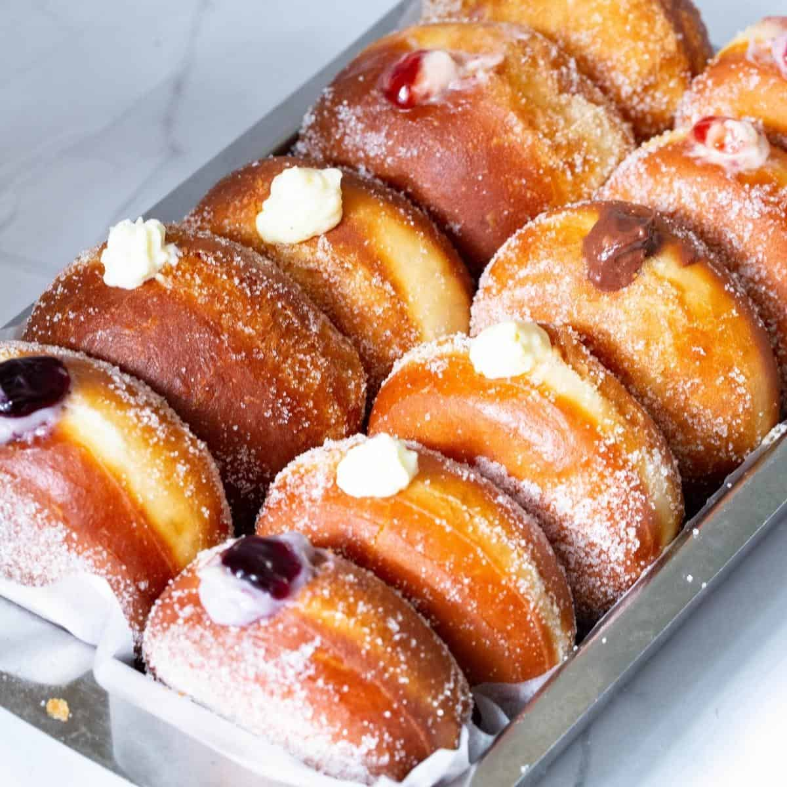
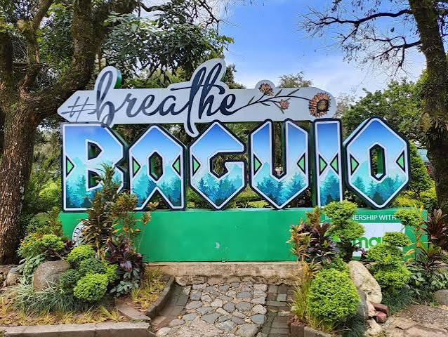

About Myself
Name: Psyrille S. Madrid
Birthdate: July 25, 2007
Address:D-5 Tabon,Aclan,Nasipit, Agusan del Norte
Role:Student
My Childhood
I grew up in a loving family where I learned the importance of respect, kindness, and hard work. I enjoyed listening to music and also singing and spending time with my family.
My Teenage Life
As a teenager, I became interested in computers and technology. I enjoyed learning new skills, meeting new people, and improving myself every day.
My Adulthood
Today I continue studying to achieve my dreams. My goal is to graduate from college and become a successful IT professional while helping my family.
My Hobbies
My Hobbies Inside our Home
- House chores
- Watching Movies
- Reading Books
- Listening to Music
My Hobbies Outside our Home
- Volleyball
- Cycling
- Traveling
- Singing
My Favorites

My Favorite Artist
Taylor Swift is my favorite artist because her songs are meaningful and inspiring.

My Favorite Food
Donut is my favorite food because it is my comfort food, sweets, and enjoyable to eat with my family.

My Favorite Place
Palawan is my favorite place because of its cool climate, beautiful views, and relaxing scenery.